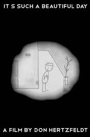

Tech, Economics, Making stuff, and Writing
|  |
WorkbotWork bot is a chat bot that seeks to dissemnate legal information to the public. Currently it is estimated that up to 17% of the New Zealand workforce are going without their minimum entitlements as employees. Workbot aims to provide simpler and more accesible employment law information to the public, to increase access to justice. Some key topics it will address include, rights and protections for employees, how to resolve disputes, and working conditions in rights around working conditions in New Zealand. |
Fair Work NZFair Work NZ was a legal web-app that told employees if they were getting treated unfairly within the workplace, performed legal automation, and connected employees with lawyers who would represent them. |
|
HireroomJazz. |